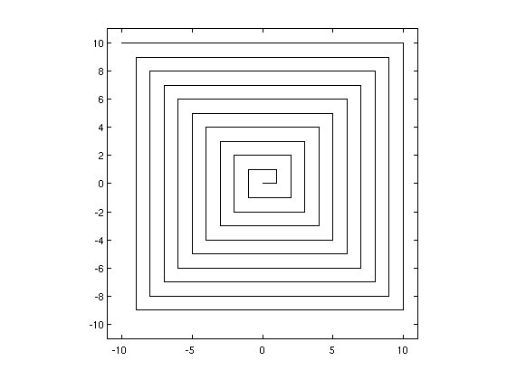
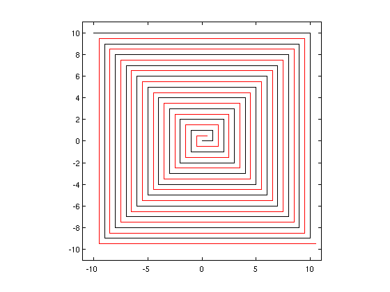
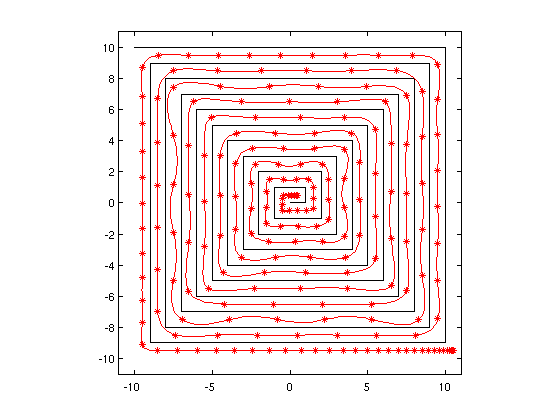
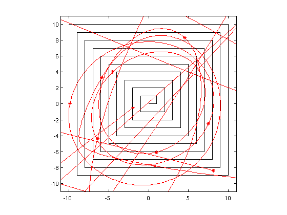

Approximation of piecewise linear functions (& chebsnake!)
Stefan Güttel, 11 July 2011
(Chebfun example fun/PiecewiseLinear.m)
One ingredient that makes Chebyshev interpolation so powerful is the small Lebesgue constant L(n) associated with the Chebyshev nodes cos(pi*(0:n)/(n+1)). The number 1 + L(n) is the factor by which the uniform best approximation of a continuous function f(x) may outperform polynomial interpolation at the corresponding nodes. The Lebesgue constant for Chebyshev nodes is asymptotically
L(n) ~ (2/pi)*log(n),
which is a mild growth in n, whereas for n equispaced nodes it's growing exponentially
L(n) ~ 2^n/(e*n*log(n)).
(See also Chapter 15 of http://www.maths.ox.ac.uk/chebfun/ATAP/)
Roughly speaking, a small Lebesgue constant also suggests that a Chebyshev interpolant stays close to interpolation data f(x), provided that the polynomial best approximant of the same degree is also close to f(x).
Let's illustrate the above with the following continuous function g(x) resembling a labyrinth.
g = chebfun('0',[0,400]); j = 0; ell = 0; d = 1; while j < 400, if isreal(d), ell = ell + 1; end; g(domain([j,j+ell])) = d; d = 1i*d; j = j + ell; end; g = cumsum(g); plot(g,'k-'); axis([-1,1,-1,1]*11) axis square
Imagine that Minotaurus is sitting in the centre of this dark labyrinth and we want to give it a description of how to escape without hitting the wall. One such description is given by the piecewise linear path f:
f = -g + .5 + .5i; hold on plot(f,'r');
Note that Minotaurus needs to change direction 38 times:
f.nfuns - 1
ans =
38
Yet another description for escaping this labyrinth is encoded by as few as 201 Chebyshev coefficients, i.e., by a Chebyshev interpolant of degree 200 (the * indicating the interpolation nodes):
figure plot(g,'k-'); hold on p = chebfun(f,[0,400],201,'splitting','off'); plot(p,'r-*'); axis([-1,1,-1,1]*11) axis square
In contrast to Chebyshev interpolation, interpolation in equispaced nodes results in immediate instability, even for a degree as small as 20:
figure plot(g,'k-'); hold on x = linspace(0,400,21); px = polyfit(x,f(x),length(x)-1,domain([0,400])); plot(px,'r-*'); axis([-1,1,-1,1]*11) axis square
Warning: Polynomial is badly conditioned. Add points with distinct X
values, reduce the degree of the polynomial, or try centering
and scaling as described in HELP POLYFIT.
 Inspired by the fact that Chebyshev interpolants can stay very close to continuous piecewise linear data f(x), the Chebfun system contains an implementation of the well-known game "Snake" (or "Nibbles") based on a Chebyshev interpolant to a moving piecewise linear function.
chebsnake.m will soon be appearing in the next Chebfun release, but for now it is available at http://www.maths.ox.ac.uk/chebfun/examples/approx/chebsnake.m
To play, download this file and type:
chebsnake;
If this is too easy for you, you may try to play this game with a polynomial interpolant through equispaced nodes:
chebsnake('equi');
You may also try barycentric rational interpolation as described by Floater and Hormann (Numerische Mathematik, 2007), an option implemented by Georges Klein. Because this is a rational interpolant, it can remain close to our piecewise linear f(x) even when the interpolation nodes are equispaced:
chebsnake('fh');
Have (Cheb)fun!